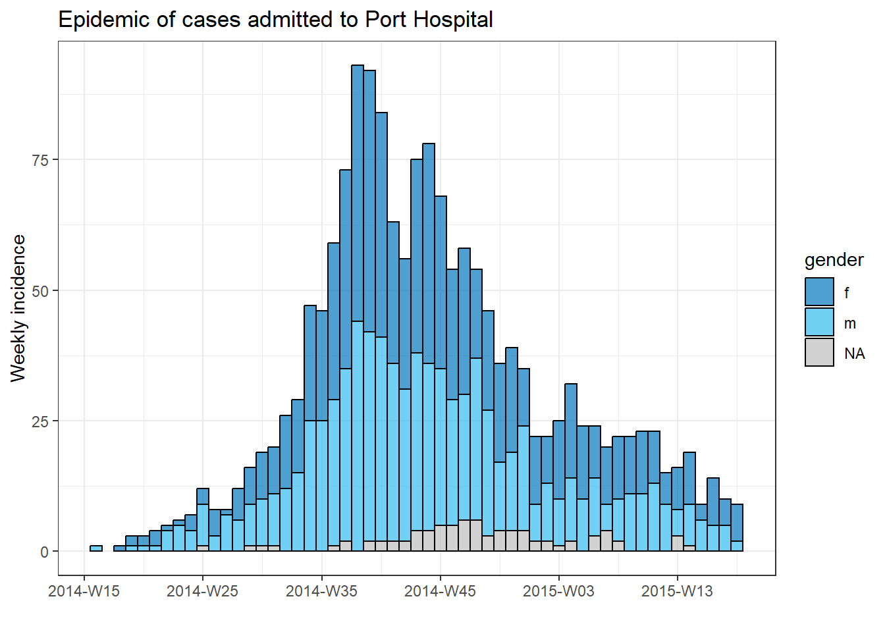
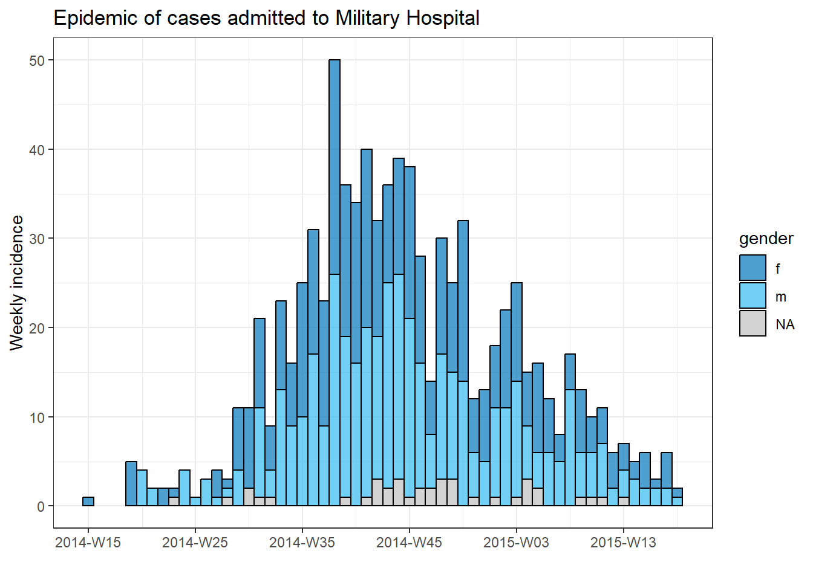
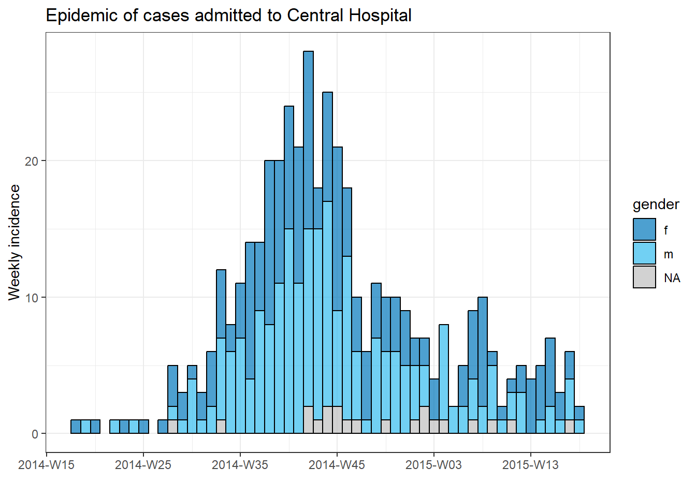
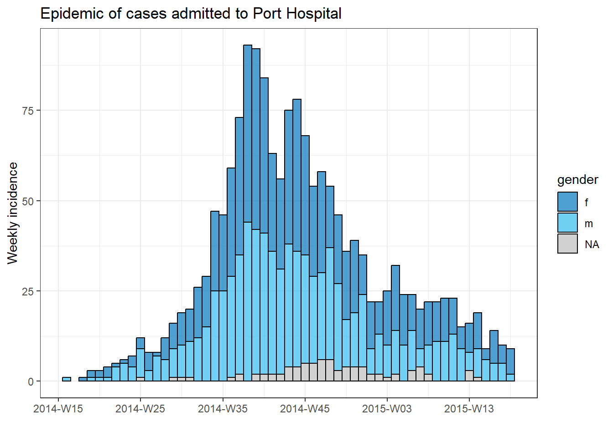
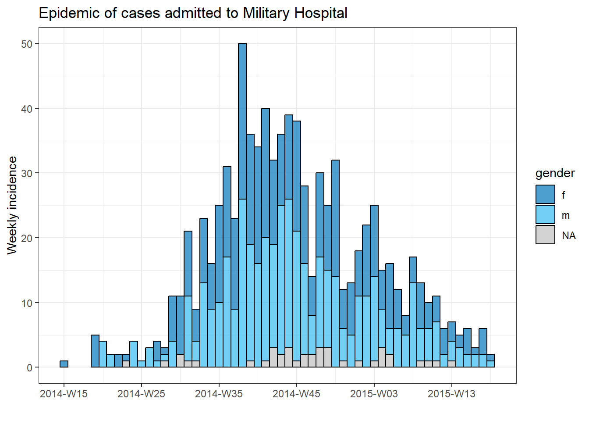
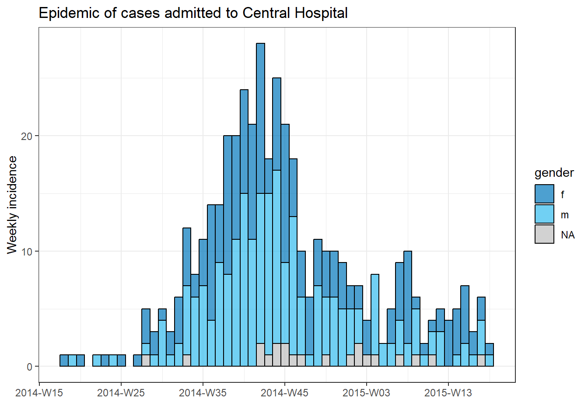

16 Yineleme, döngüler ve listeler
Epidemiyologlar sıklıkla ülkeler, ilçeler veya yaş grupları gibi alt gruplar üzerinde tekrar eden analizlerle karşı karşıya kalırlar. Bunlar yinelemeyi içeren birçok durumdan sadece birkaçıdır. Aşağıdaki yaklaşımları kullanarak yinelemeli işlemlerinizi kodlamak, bu tür tekrarlayan görevleri daha hızlı gerçekleştirmenize, hata olasılığını azaltmanıza ve kod uzunluğunu azaltmanıza yardımcı olacaktır.
Bu sayfa, yinelemeli işlemlere iki yaklaşım sunacaktır - for döngülerini ve purrr paketini kullanmak.
- for döngüleri, bir dizi giriş boyunca kodu yineler, ancak R’da diğer programlama dillerinden daha az yaygındır. Yine de, onları burada bir öğrenme aracı ve referans olarak tanıtıyoruz.
- purrr paketi, yinelemeli işlemlere tidyverse yaklaşımdır - bir işlevi birçok girdi arasında “eşleyerek” çalışır (değerler, sütunlar, veri kümeleri vb.)
Yol boyunca, aşağıdaki gibi örnekler göstereceğiz:
- Birden çok dosyayı içe ve dışa aktarma
- Birden fazla yetki alanı için eğriler oluşturma
- Bir veri çerçevesindeki birkaç sütun için T testleri çalıştırma
purrrsection bölümünde, listeleri - lists oluşturma ve işlemeye ilişkin birkaç örnek de sunacağız.
16.1 Hazırlık
Paketleri yükleme
Bu kod parçası, analizler için gerekli olan paketlerin yüklenmesini gösterir. Bu el kitabında, gerekli olursa paketi kuran ve kullanım için yükleyen pacman’ın p_load() fonksiyonunu vurguluyoruz. Ayrıca, R tabanından library() ile kurulu paketleri yükleyebilirsiniz. R paketleri hakkında daha fazla bilgi için [R temelleri] sayfasına bakın.
pacman::p_load(
rio, # içe/dışa aktarma
here, # dosya bulucu
purrr, # yineleme
tidyverse # veri yönetimi ve görselleştirme
)Verileri içe aktarma
Simüle edilmiş bir Ebola salgınından vakaların veri setini içe aktarıyoruz. Devam etmek isterseniz, “temiz” satır listesini indirmek için tıklayın (.rds dosyası olarak). Verileri rio paketinden import() fonksiyonuyla içe aktarın (.xlsx, .csv, .rds gibi birçok dosya türünü işler - ayrıntılar için [İçe ve Dışa Aktarma] sayfasına bakın).
# satır listesini içe aktar
linelist <- import("linelist_cleaned.rds")Çizgi listesinin ilk 50 satırı aşağıda görüntülenir.
16.2 for döngüleri
R’daki for döngüleri*
for döngüleri R’de vurgulanmaz, ancak diğer programlama dillerinde yaygındır. Yeni başlayan olarak, “keşfetmek”te , “hata ayıklamak”ta daha kolay oldukları için öğrenmek ve pratik yapmak için yardımcı olabilirler ve aksi takdirde, özellikle kendi işlevlerinizi yazarken henüz rahat değilseniz, her yinelemenin tam olarak ne olduğunu anlamalısınız.
purrr ile eşlenmiş işlevlerle yinelemek için for döngüleri sayesinde hızla ilerleyebilirsiniz (aşağıdaki bölüme bakın).
Temel bileşenler
Bir for döngüsünün üç temel parçası vardır:
- Yinelenecek öğelerin sırası
- Sıradaki her öğe başına yapılacak işlemler
- Sonuçlar için kapsayıcı (isteğe bağlı)
Temel sözdizimi şudur: for (sıradaki öğe) {öğeyi kullanarak işlemler yapın}. Parantezlere ve küme parantezlerine dikkat edin. Sonuçlar konsola yazdırılabilir veya bir kapsayıcı R nesnesinde saklanabilir.
Basit bir for döngüsü örneği aşağıdadır.
for (num in c(1,2,3,4,5)) { # SIRA tanımlanır (1'den 5'e kadar sayılar) ve "{" ile döngü açılır
print(num + 2) # İŞLEMLER (her sıra numarasına iki tane ekleyin ve yazdırın)
} # Döngü "}" ile kapatılır ## [1] 3
## [1] 4
## [1] 5
## [1] 6
## [1] 7
# Bu örnekte "kapsayıcı" yokSıralama
Bu, for döngüsünün “for” kısmıdır - işlemler dizideki her öğe için “for” çalışır. Sıra, bir dizi değer (ör. yetki alanlarının adları, hastalıklar, sütun adları, liste öğeleri, vb.) olabilir veya bir dizi ardışık sayı (ör. 1,2,3,4,5) olabilir. Her yaklaşımın aşağıda açıklanan kendi araçları vardır.
Bir dizi ifadesinin temel yapısı vektördeki öğedir.
- “Öğe” yerine herhangi bir karakter veya kelime yazabilirsiniz (örn. “i”, “num”, “hosp”, “bölge” vb.). Bu “öğenin” değeri, vektördeki her değerden geçerek döngünün her yinelemesinde değişir.
- Vektör, karakter değerleri, sütun adları veya belki bir dizi sayı olabilir - bunlar her yinelemede değişecek olan değerlerdir. Bunları “item” terimini kullanarak for döngüsü işlemleri içinde kullanabilirsiniz.
Örnek: karakter değerleri dizisi
Bu örnekte, hastane adlarının önceden tanımlanmış bir karakter vektöründeki her bir değer için bir döngü gerçekleştirilir.
# hastane isimlerinin vektörünü yap
hospital_names <- unique(linelist$hospital)
hospital_names # yazdır## [1] "Other" "Missing"
## [3] "St. Mark's Maternity Hospital (SMMH)" "Port Hospital"
## [5] "Military Hospital" "Central Hospital"Hastane_adı - hospital_names vektöründen değerleri temsil etmek için hosp terimini seçtik. Döngünün ilk yinelemesi için, hosp değeri hastane_adı - hospital_names[[1]] olacaktır. İkinci döngü için hastane_adı - hospital_names[[2]] olacaktır. Ve bunun gibi…
# karakter sıralı bir 'for döngüsü'
for (hosp in hospital_names){ # sıra
# İŞLEMLER BURAYA YAZILIR
}Örnek: sütun adları dizisi
Bu, mevcut bir R nesnesinin adlarının çıkarıldığı ve vektör haline geldiği, yukarıdaki karakter dizisinin bir varyasyonudur. Örneğin, bir veri çerçevesinin sütun adları. Uygun bir şekilde, for döngüsünün işlem kodunda, sütun adları orijinal veri çerçevelerini indekslemek (alt kümeler) için kullanılabilir.
Aşağıda sıra, satır listesi veri çerçevesinin adları - names() (sütun adları) şeklindedir. “Öğe” adımız, döngüler ilerledikçe her sütun adını temsil edecek olan col’dur.
Örnek olarak, dizideki her değer için çalıştırılan for döngüsünün içine işlem kodunu ekledik. Bu kodda, sıra değerleri (sütun adları), her seferinde bir satır listesini indekslemek (alt küme) için kullanılır. R temelleri sayfasında öğretildiği gibi, alt küme için çift köşeli ayraçlar [[ ]] kullanılır. Elde edilen sütun is.na() öğesine, ardından sütunda eksik olan değerlerin sayısını üretmek için sum() öğesine iletilir. Sonuç konsola yazdırılır - her sütun için bir sayı.
Sütun adlarıyla indeksleme hakkında bir not - sütunun kendisine atıfta bulunurken sadece “col” yazmayın! col sadece karakter sütun adını temsil eder! Tüm sütuna başvurmak için, sütun adını linelist[[col]] aracılığıyla satır listesinde bir dizin olarak kullanmalısınız.
for (col in names(linelist)){ # satır listesindeki her sütun için döngü çalışır; "col" ile temsil edilen sütun adı
# Örnek işlem kodu - sütundaki eksik değerlerin sayısını yazdır
print(sum(is.na(linelist[[col]]))) # sıra listesi, "col" öğesinin geçerli değeriyle indekslenir
}## [1] 0
## [1] 0
## [1] 2087
## [1] 256
## [1] 0
## [1] 936
## [1] 1323
## [1] 278
## [1] 86
## [1] 0
## [1] 86
## [1] 86
## [1] 86
## [1] 0
## [1] 0
## [1] 0
## [1] 2088
## [1] 2088
## [1] 0
## [1] 0
## [1] 0
## [1] 249
## [1] 249
## [1] 249
## [1] 249
## [1] 249
## [1] 149
## [1] 765
## [1] 0
## [1] 256Sayıların dizisi
Bu yaklaşımda, dizi ardışık sayılar dizisidir. Bu nedenle, “öğe”nin değeri bir karakter değeri değil (ör. “Merkez Hastane” veya “tarih_başlangıç”) bir sayıdır. Bu, veri çerçevesini satır numarasına göre indekslemek için for döngüsü içindeki “öğe” numarasını kullanabileceğiniz için veri çerçeveleri arasında döngü yapmak için kullanışlıdır.
Örneğin, veri çerçevenizdeki her satırda döngü yapmak ve belirli bilgileri çıkarmak istediğinizi varsayalım. “Öğeleriniz” sayısal satır numaraları olacaktır. Çoğu zaman, bu durumda “öğeler” i olarak yazılır.
For döngüsü işlemi, “veri çerçevemdeki 1’den toplam satır sayısına kadar bir sayı dizisindeki her öğe için X yap” şeklinde açıklanabilir. Döngünün ilk yinelemesi için “item” i değeri 1 olur. İkinci yineleme için i 2 olur, vb.
Sıra kodda şöyle görünür: for (i in 1:nrow(linelist)) {OPERATIONS CODE} burada i “öğeyi” temsil eder ve 1:nrow(linelist) 1’den satır listesindeki satır sayısına kadar ardışık sayılar dizisi üretir.
for (i in 1:nrow(linelist)) { # bir veri çerçevesinde kullan
# İŞLEMLER BURAYA YAZILIR
} Dizinin sayı olmasını istiyorsanız, ancak bir vektörden başlıyorsanız (bir veri çerçevesi değil), vektördeki her bir öğeki bir sayı dizisini döndürmek için seq_along() kısayolunu kullanın. Örneğin, for (i in seq_along(hospital_names) {OPERATIONS CODE}.
Aşağıdaki kod aslında kendi döngülerinde i’nin değeri olacak olan sayıları döndürür.
seq_along(hospital_names) # adlandırılmış bir vektör üzerinde kullan## [1] 1 2 3 4 5 6Dizide sayıları kullanmanın bir avantajı, döngü çıktılarını depolayan bir kapsayıcıyı indekslemek için i numarasını kullanmanın da kolay olmasıdır. Aşağıdaki İşlemler bölümünde bunun bir örneği var.
Operasyonlar
Bu, for döngüsünün küme parantezleri { } içindeki koddur. Bu kodun sıradaki her “öğe” için çalışmasını istiyorsunuz. Bu nedenle, kodunuzun “öğe” ile değişen her parçasının gerçekten değişeceği şekilde doğru kodlanmış olmasına dikkat edin! Örneğin, indeksleme için [[ ]] kullanmayı unutmayın.
Aşağıdaki örnekte, satır listesindeki her bir satırı yineliyoruz. Her satırın cinsiyet - gender ve yaş - age değerleri birbirine yapıştırılır ve cases_demographics kapsayıcı karakter vektöründe saklanır. Döngü çıktısını “kapsayıcı” vektöründe doğru konuma kaydetmek için indekslemeyi [[i]] nasıl kullandığımıza dikkat edin.
# sonuçları depolamak için kapsayıcı oluştur - bir karakter vektörü
cases_demographics <- vector(mode = "character", length = nrow(linelist))
# for döngüsü
for (i in 1:nrow(linelist)){
# OPERASYONLAR
# indeksleme için parantez kullanarak satır i için satır listesinden değerleri ayıkla
row_gender <- linelist$gender[[i]]
row_age <- linelist$age_years[[i]] # indekslemeyi unutmayın!
# cinsiyet-yaşı birleştirin ve indekslenmiş konumda kapsayıcı vektöründe sakla
cases_demographics[[i]] <- str_c(row_gender, row_age, sep = ",")
} # döngü sonu
# kapsayıcının ilk 10 satırını göster
head(cases_demographics, 10)## [1] "m,2" "f,3" "m,56" "f,18" "m,3" "f,16" "f,16" "f,0" "m,61" "f,27"Kapsayıcı
Bazen for döngüsünün sonuçları konsola veya RStudio Plots bölmesine yazdırılır. Diğer zamanlarda, çıktıları daha sonra kullanmak üzere bir “kapsayıcı”da saklamak isteyeceksiniz. Böyle bir kapsayıcı, bir vektör, bir veri çerçevesi ve hatta bir liste olabilir.
For döngüsüne başlamadan önce bile sonuçlar için kapsayıcı oluşturmak en verimli yöntemdir. Pratikte bu, boş bir vektör, veri çerçevesi veya liste oluşturmak anlamına gelir. Bunlar, vektörler veya listeler için vector() işlevleriyle veya bir veri çerçevesi için matrix() ve data.frame() işlevleriyle oluşturulabilir.
Boş vektör
vector()’u kullanın ve ekleyeceğiniz nesnelerin beklenen sınıfına göre mode = belirtin - “çift” (sayıları tutmak için), “karakter” veya “mantıksal”. Ayrıca length = önceden ayarlamalısınız. Bu, for döngüsü dizinizin uzunluğu olmalıdır.
Her hastane için medyan kabul gecikmesini saklamak istediğinizi varsayalım. “Çift” kullanır ve uzunluğu beklenen çıktıların sayısı (veri setindeki benzersiz hastanelerin sayısı) olarak ayarlarsınız.
delays <- vector(
mode = "double", # numaraları kaydetmeyi bekliyoruz
length = length(unique(linelist$hospital))) # veri setindeki benzersiz hastanelerin sayısıBoş veri çerçevesi
Bunun gibi satır ve sütun sayısını belirterek boş bir veri çerçevesi oluşturabilirsiniz:
delays <- data.frame(matrix(ncol = 2, nrow = 3))Boş liste
Bir for döngüsü tarafından oluşturulan bazı grafikleri bir listede saklamak isteyebilirsiniz. Liste vektör gibidir, ancak içinde farklı sınıflardan olabilen diğer R nesnelerini içerir. Listedeki öğeler tek bir sayı, bir veri çerçevesi, bir vektör ve hatta başka bir liste olabilir.
Aslında yukarıdakiyle aynı vector() komutunu kullanarak, ancak mode = "list" ile boş bir liste başlatıyorsunuz. Uzunluğu istediğiniz gibi belirtin.
plots <- vector(mode = "list", length = 16)Yazdırma
Bir for döngüsü içinden yazdırmak için büyük olasılıkla print() işleviyle açıkça sarmanız gerekeceğini unutmayın.
Aşağıdaki bu örnekte dizi, hastane tarafından satır listesinin alt kümesi için kullanılan açık bir karakter vektörüdür. Sonuçlar bir kapsayıcıda saklanmaz, bunun yerine print() işleviyle konsola yazdırılır.
for (hosp in hospital_names){
hospital_cases <- linelist %>% filter(hospital == hosp)
print(nrow(hospital_cases))
}## [1] 885
## [1] 1469
## [1] 422
## [1] 1762
## [1] 896
## [1] 454For döngüsünü test etme
Döngünüzü test etmek için, i <- 10 veya hosp <- "Central Hospital" gibi “öğe”nin geçici bir atamasını yapmak için bir komut çalıştırabilirsiniz. Bunu döngünün dışında yapın ve ardından beklenen sonuçların üretilip üretilmediğini görmek için yalnızca işlem kodunuzu (kıvrımlı parantez içindeki kod) çalıştırın.
Döngü grafikleri
Üç bileşeni (kapsayıcı, sıralama ve operasyonlar) bir araya getirmek için her hastane için bir epi eğrisi çizmeye çalışalım (Salgın eğrileri sayfasına bakın).
Aşağıdaki gibi incidence2 paketini kullanarak tüm vakaların cinsiyete göre güzel bir epik eğrisini yapabiliriz:
# 'insidans' nesnesi oluşturun
outbreak <- incidence2::incidence(
x = linelist, # dataframe - tam satır listesi
date_index = date_onset, # tarih sütunu
interval = "week", # haftalık toplu sayımlar
groups = gender, # cinsiyete göre grup değerleri
na_as_group = TRUE) # eksik cinsiyet ayrı bir gruptur
# plot epi eğrisi
plot(outbreak, # olay nesnesinin adı
fill = "gender", # cinsiyete göre renk çubukları
color = "black", # çubukların anahat rengi
title = "Outbreak of ALL cases" # başlık
)Her hastanenin vakası için ayrı bir grafik oluşturmak için bu epi eğri kodunu bir for döngüsüne koyabiliriz.
İlk olarak, benzersiz hastane adlarının adlandırılmış bir vektörünü, hospital_names olarak kaydederiz. for döngüsü şu adların her biri için bir kez çalışacaktır: for (hosp in hospital_names). for döngüsünün her yinelemesinde, vektörden gelen mevcut hastane adı, döngü içinde kullanım için hosp olarak temsil edilecektir.
Döngü işlemleri içinde, normal olarak R kodunu yazabilirsiniz, ancak değerinin değişeceğini bilerek “öğe”yi (bu durumda hosp) kullanın. Bu döngü içinde:
- Satır listesine bir
filter()uygulanır, öyle ki hastane -hospitalsütunu,hosp’un mevcut değerine eşit olmalıdır. - İnsidans nesnesi, filtrelenmiş satır listesinde oluşturulur.
- Mevcut hastane için grafik,
hospkullanan otomatik ayarlı bir başlıkla oluşturulur. - Mevcut hastane için grafik geçici olarak kaydedilir ve ardından yazdırılır.
- Döngü, daha sonra,
hospital_namesiçindeki bir sonraki hastane ile tekrar etmek için ilerler
# hastane isimlerinin vektörünü yapın
hospital_names <- unique(linelist$hospital)
# hospital_names deki her ad ("hosp") için epi eğrisini oluşturun ve yazdırın
for (hosp in hospital_names) {
# mevcut hastaneye özgü olay nesnesi oluşturun
outbreak_hosp <- incidence2::incidence(
x = linelist %>% filter(hospital == hosp), # satır listesi mevcut hastaneye göre filtrelenir
date_index = date_onset,
interval = "week",
groups = gender,
na_as_group = TRUE
)
# Grafik oluşturun ve kaydedin. Başlık otomatik olarak mevcut hastaneye göre ayarlanır
plot_hosp <- plot(
outbreak_hosp,
fill = "gender",
color = "black",
title = stringr::str_glue("Epidemic of cases admitted to {hosp}")
)
# mevcut hastane için grafik yazdırın
print(plot_hosp)
} # hospital_names içindeki her hastane için çalıştırıldığında for döngüsünü sonlandırın 

 

Bir döngünün ilerlemesini izleme
Birçok yinelemeli bir döngü, dakikalarca hatta saatlerce çalışabilir. Bu nedenle, ilerlemeyi R konsoluna yazdırmak yararlı olabilir. Aşağıdaki if ifadesi, her 100. sayıyı yazdırmak için döngü fonksiyonlarının içine yerleştirilebilir. Döngünüzdeki “öğe” i olacak şekilde ayarlayın.
# her 100 yinelemede ilerlemeyi yazdırmak için kodlu döngü
for (i in seq_len(nrow(linelist))){
# yazdırma ilerlemesi
if(i %% 100==0){ # %% operatörü kalandır
print(i)
}16.3 purrr ve listeler
Yinelemeli işlemlere başka bir yaklaşım da purrr paketidir - yineleme için tidyverse yaklaşımdır.
Aynı görevi birkaç kez yapmakla karşı karşıya kalırsanız, muhtemelen birçok girdide kullanabileceğiniz genelleştirilmiş bir çözüm oluşturmaya değer. Örneğin, birden fazla yetki alanları için grafikler oluşturmak veya birçok dosyayı içe aktarmak ve birleştirmek.
Ayrıca purrr’ın birkaç avantajı daha vardır - %>% tünelleriyle kullanabilirsiniz, for döngülerine kıyasla normalden daha iyi hataları ele alır ve sözdizimi oldukça temiz ve basittir! Bir for döngüsü kullanıyorsanız, muhtemelen purrr ile daha net ve özlü bir şekilde yapabilirsiniz!
purrr’ın fonksiyonel programlama aracı olduğunu unutmayın. Yani, yinelemeli olarak uygulanacak işlemler fonksiyonlara sarılır. Kendi işlevlerinizi nasıl yazacağınızı öğrenmek için [Yazma işlevleri] sayfasına bakın.
purrr ayrıca neredeyse tamamen listeler ve vektörler üzerine kuruludur - bu yüzden bunu o listenin/vektörün her bir öğesine bir işlev uygulamak olarak düşünün!
Paketleri yükleme
purrr tidyverse’in bir parçasıdır, bu nedenle ayrı bir paket kurmaya/yüklemeye gerek yoktur.
pacman::p_load(
rio, # içe/dışa aktar
here, # ilgili dosya yolları
tidyverse, # mgt ve viz verisi
writexl, # Excel dosyasını birden çok sayfayla yaz
readxl # Excel'i birden çok sayfayla içe aktar
)
map()
purrr’un temel bir işlevi, sağladığınız bir listenin/vektörün her giriş öğesine bir işlevi “eşleyen” (uygulayan) map() işlevidir.
Temel sözdizimi map(.x = SEQUENCE, .f = FUNCTION, OTHER ARGUMENTS). Biraz daha ayrıntılı olarak:
-
.x =,.fişlevinin yinelemeli olarak uygulanacağı girdilerdir - ör. yetki alanları adları vektörü, veri çerçevesindeki sütunlar veya veri çerçeveleri listesi. -
.f =,.xgirişinin her bir öğesine uygulanacak fonksiyondur - zaten var olanprint()gibi bir işlev veya tanımladığınız özel bir işlev olabilir. İşlev genellikle yaklaşık işaretinden sonra yazılır~(ayrıntılar aşağıdadır).
Sözdizimi hakkında birkaç not daha:
- Fonksiyonun daha fazla argümana ihtiyacı yoksa, parantez ve yaklaşık işareti olmadan yazılabilir (ör.
.f = mean). Her yineleme için aynı değerde olacak bağımsız değişkenler sağlamak için, bunlarımap()içinde ancak.f =bağımsız değişkeninin dışında sağlayın, örneğinna.rm = Tiçinemap(.x = my_list, .f = mean, na.rm=T). - Bu yinelemenin
.xdeğeri için yer tutucu olarak.f =fonksiyonu içinde.x(veya basitçe.) kullanabilirsiniz. - Fonksiyon üzerinde daha fazla kontrole sahip olmak için yaklaşık sözdizimini (
~) kullanın - fonksiyonu parantez içinde normal olarak yazın, örneğin:map(.x = my_list, .f = ~mean(., na.rm = T)). Bu söz dizimini özellikle bir bağımsız değişkenin değeri her yinelemeyi değiştirecekse veya.xdeğerinin kendisiyse kullanın (aşağıdaki örneklere bakın)
map() kullanımının çıktısı bir listedir - liste, vektör gibi bir nesne sınıfıdır, ancak öğeleri farklı sınıflardan olabilir. Bu nedenle, map() tarafından üretilen bir liste birçok veri çerçevesi veya birçok vektör, birçok tek değer ve hatta birçok liste içerebilir! Aşağıda açıklanan ve diğer çıktı türlerini üreten alternatif map() sürümleri vardır (örneğin, bir veri çerçevesi oluşturmak için .map_dfr(), karakter vektörleri üretmek için map_chr() ve sayısal vektörler üretmek için map_dbl()).
Örnek - Excel sayfalarını içe aktarın ve birleştirin
Yaygın bir epidemiyolog göreviyle gösterelim: - aka verileri içeren bir Excel çalışma kitabını içe aktarmak istiyorsunuz, ancak veriler çalışma kitabındaki farklı adlandırılmış sayfalara bölünüyor. Sayfaları tek bir veri çerçevesinde nasıl verimli bir şekilde içe aktarır ve birleştirirsiniz?
Diyelim ki aşağıdaki Excel çalışma kitabı bize gönderildi. Her sayfa belirli bir hastaneden vakaları içerir.

İşte map() kullanan bir yaklaşım:
-
map()import()işlevi, böylece her Excel sayfası için çalışır -
bind_rows()kullanarak içe aktarılan veri çerçevelerini bir araya getirin - Yol boyunca, her satır için orijinal sayfa adını koruyarak bu bilgiyi son veri çerçevesinde yeni bir sütunda saklayın
İlk olarak, sayfa adlarını çıkarmamız ve kaydetmemiz gerekiyor. Excel çalışma kitabının dosya yolunu, sayfa adlarını ayıklayan readxl paketinden excel_sheets() işlevine sağlıyoruz. Bunları sheet_names adlı bir karakter vektöründe saklarız.
sheet_names <- readxl::excel_sheets("hospital_linelists.xlsx")İşte isimler:
sheet_names## [1] "Central Hospital" "Military Hospital" "Missing"
## [4] "Other" "Port Hospital" "St. Mark's Maternity Hospital"Artık bu ad vektörüne sahip olduğumuza göre, map() bunları import()işlevine birer birer sağlayabilir. Bu örnekte sheet_names, .x ve import() .f işlevidir.
İçe aktarma ve dışa aktarma sayfasından, Excel çalışma kitaplarında kullanıldığında import() öğesinin içe aktarılacak sayfayı belirten which = bağımsız değişkeni kabul edebileceğini hatırlayın..f fonksiyonu import() içinde, sheet_names vektörü aracılığıyla değeri her yinelemede değişecek olan which = .x’i sağlarız - önce “Merkez Hastane”, ardından “Askeri Hastane” vb.
Not - map() kullandığımız için, her Excel sayfasındaki veriler bir liste içinde ayrı bir veri çerçevesi olarak kaydedilecektir. Bu liste öğelerinin (veri çerçevelerinin) her birinin bir ada sahip olmasını istiyoruz, bu nedenle sheet_names map()’e aktarmadan önce onu set_names() aracılığıyla purrr’dan geçiririz, bu da her liste öğesinin uygun adı almasını sağlar.
Çıktı listesini combined olarak kaydediyoruz.
combined <- sheet_names %>%
purrr::set_names() %>%
map(.f = ~import("hospital_linelists.xlsx", which = .x))Çıktıyı incelediğimizde, her bir Excel sayfasındaki verilerin bir adla listeye kaydedildiğini görüyoruz. Bu iyi, ama tam olarak bitirmedik.

Son olarak, benzer şekilde yapılandırılmış veri çerçevelerinin listesini kabul eden ve bunları tek bir veri çerçevesinde birleştiren bind_rows() (dplyr’den) işlevini kullanıyoruz. Liste öğesi adlarından yeni bir sütun oluşturmak için, .id = bağımsız değişkenini kullanırız ve ona yeni sütun için istenen adı veririz.
Tüm komut dizisi aşağıdadır:
sheet_names <- readxl::excel_sheets("hospital_linelists.xlsx") # extract sheet names
combined <- sheet_names %>% # begin with sheet names
purrr::set_names() %>% # set their names
map(.f = ~import("hospital_linelists.xlsx", which = .x)) %>% # iterate, import, save in list
bind_rows(.id = "origin_sheet") # combine list of data frames, preserving origin in new column Ve şimdi, orijin sayfasını içeren bir sütuna sahip bir veri çerçevemiz var!

Bilmeniz gereken map() varyasyonları vardır. Örneğin, map_dfr() bir liste değil, bir veri çerçevesi döndürür. Böylece yukarıdaki görev için kullanabilirdik ve satırları bağlamak zorunda kalmazdık. Ama o zaman her vakanın hangi sayfadan (hastaneden) geldiğini yakalayamazdık.
Diğer varyasyonlar arasında map_chr(), map_dbl() bulunur. Bunlar iki nedenden dolayı çok faydalı işlevlerdir. İlk önce. yinelemeli bir işlevin çıktısını otomatik olarak bir vektöre (listeye değil) dönüştürürler. İkincisi, verilerin geri geldiği sınıfı açıkça kontrol edebilirler - verilerinizin map_chr() ile bir karakter vektörü veya map_dbl() ile sayısal vektör olarak geri gelmesini sağlarsınız. Bölümde daha sonra bunlara dönelim!
map_at() ve map_if() işlevleri yineleme için de çok kullanışlıdır - bir listenin hangi öğelerini yinelemeniz gerektiğini belirlemenize izin verirler! Bunlar basitçe bir dizin/ad vektörü (map_at() durumunda) veya mantıksal bir test (map_if() durumunda) uygulayarak çalışır.
Hastane verilerinin ilk sayfasını okumak istemediğimiz bir örnek kullanalım. map() yerine map_at() kullanırız ve .at = bağımsız değişkeni c(-1) olarak belirtiriz, bu da .x’in ilk öğesini kullanılmaması anlamına gelir. Alternatif olarak, hangi öğelerin kullanılacağını belirtmek için, .at = için, bir pozitif sayı veya ad vektörü sağlayabilirsiniz.
sheet_names <- readxl::excel_sheets("hospital_linelists.xlsx")
combined <- sheet_names %>%
purrr::set_names() %>%
# ilk sayfayı hariç tut
map_at(.f = ~import( "hospital_linelists.xlsx", which = .x),
.at = c(-1))İlk sayfa adının yine de çıktı listesinin bir öğesi olarak görüneceğini unutmayın - ancak bu yalnızca tek bir karakter adıdır (veri çerçevesi değil). Satırları bağlamadan önce bu öğeyi kaldırmanız gerekir. Liste öğelerinin nasıl kaldırılacağını ve değiştirileceğini daha sonraki bir bölümde ele alacağız.
Veri kümesini bölme ve dışa aktarma
Aşağıda, bir veri kümesinin parçalara nasıl bölüneceğine ve ardından her bir parçayı ayrı bir Excel sayfası veya ayrı bir CSV dosyası olarak dışa aktarmak için map() yinelemesinin nasıl kullanılacağına ilişkin bir örnek veriyoruz.
Bölünmüş veri seti
Veri çerçevesi olarak tam vaka satır listesine sahip olduğumuzu ve şimdi her hastane için ayrı bir satır listesi oluşturmak ve her birini ayrı bir CSV dosyası olarak dışa aktarmak istediğimizi varsayalım. Aşağıda, izleyen adımları yapıyoruz:
hospital sütunundaki benzersiz değerlere göre satır listesi veri çerçevesini bölmek için group_split() (dplyr’den) kullanın. Çıktı, her hastane alt kümesi başına bir veri çerçevesi içeren bir listedir.
linelist_split <- linelist %>%
group_split(hospital)View(linelist_split) çalıştırabilir ve bu listenin her birinin bir hastaneden vakaları temsil eden 6 veri çerçevesi (“tibbles”) içerdiğini görebiliriz.

Ancak, listedeki veri çerçevelerinin varsayılan olarak adları olmadığını unutmayın! Her birinin bir adı olmasını ve ardından CSV dosyasını kaydederken bu adı kullanmasını istiyoruz.
Adları çıkarmaya yönelik bir yaklaşım, listedeki her veri çerçevesinden hospital sütununu çıkarmak için pull() (dplyr’den) kullanmaktır. Ardından, güvende olmak için değerleri karaktere dönüştürürüz ve ardından o belirli veri çerçevesinin adını almak için unique() işlevini kullanırız. Bu adımların tümü, her veri çerçevesine map() aracılığıyla uygulanır.
names(linelist_split) <- linelist_split %>% # Assign to names of listed data frames
# Extract the names by doing the following to each data frame:
map(.f = ~pull(.x, hospital)) %>% # Pull out hospital column
map(.f = ~as.character(.x)) %>% # Convert to character, just in case
map(.f = ~unique(.x)) # Take the unique hospital nameArtık liste öğelerinin her birinin bir adı olduğunu görebiliriz. Bu isimlere names(linelist_split) üzerinden erişilebilir.

names(linelist_split)## [1] "Central Hospital" "Military Hospital"
## [3] "Missing" "Other"
## [5] "Port Hospital" "St. Mark's Maternity Hospital (SMMH)"Birden fazla group_split() sütunu
Hastane VE cinsiyetin kesişimine göre alt küme satır listesi üretmek gibi, satır listesini birden fazla gruplama sütununa bölmek istiyorsanız, liste öğelerini adlandırmak için farklı bir yaklaşıma ihtiyacınız olacaktır. Bu, dplyr’den group_keys() kullanarak benzersiz “grup anahtarları”nın toplanmasını içerir - bunlar bir veri çerçevesine döndürülür. Ardından, aşağıda gösterildiği gibi unite() ile grup anahtarlarını değerler halinde birleştirebilir ve bu grup adlarını linelist_split’e atayabilirsiniz.
# benzersiz hastane-cinsiyet kombinasyonlarına göre bölünmüş satır listesi
linelist_split <- linelist %>%
group_split(hospital, gender)
# group_keys() öğesini bir veri çerçevesi olarak çıkar
groupings <- linelist %>%
group_by(hospital, gender) %>%
group_keys()
groupings # benzersiz gruplamaları göster ## # A tibble: 18 × 2
## hospital gender
## <chr> <chr>
## 1 Central Hospital f
## 2 Central Hospital m
## 3 Central Hospital <NA>
## 4 Military Hospital f
## 5 Military Hospital m
## 6 Military Hospital <NA>
## 7 Missing f
## 8 Missing m
## 9 Missing <NA>
## 10 Other f
## 11 Other m
## 12 Other <NA>
## 13 Port Hospital f
## 14 Port Hospital m
## 15 Port Hospital <NA>
## 16 St. Mark's Maternity Hospital (SMMH) f
## 17 St. Mark's Maternity Hospital (SMMH) m
## 18 St. Mark's Maternity Hospital (SMMH) <NA>Şimdi, tire ile ayrılmış gruplamaları bir araya getiriyoruz ve bunları linelist_split’te liste elemanlarının adları olarak atadık. NA’yı “Eksik” ile değiştirdiğimiz için bu, bazı ekstra satırlar alır, sütun değerlerini birleştirmek için dplyr’den unite() kullanın (tire ile ayrılmış), ve sonra linelist_split adları olarak kullanılabilmesi için adsız bir vektöre dönüştürün.
Excel sayfaları olarak dışa aktar
Hastane satır listelerini, sayfa başına bir satır listesi ile bir Excel çalışma kitabı olacak şekilde dışa aktarmak için, writexl paketinden write_xlsx() işlevine yalnızca linelist_split adlı listeyi sağlayabiliriz. Bu, birden çok sayfa içeren bir Excel çalışma kitabını kaydetme özelliğine sahiptir. Liste öğesi adları, sayfa adları olarak otomatik olarak uygulanır.
linelist_split %>%
writexl::write_xlsx(path = here("data", "hospital_linelists.xlsx"))Artık Excel dosyasını açıp her hastanenin kendi sayfası olduğunu görebilirsiniz.

Export as CSV files
Bu biraz daha karmaşık bir komuttur, ancak hastaneye özel her bir satır listesini hastaneye özel bir dosya adıyla ayrı bir CSV dosyası olarak da dışa aktarabilirsiniz.
Yine map() kullanıyoruz: liste öğesi adlarının (yukarıda gösterilen) vektörünü alıyoruz ve bunlar arasında yineleme yapmak için map() kullanıyoruz, bu adı taşıyan linelist_split listesindeki veri çerçevesine export() (rio paketinden, [İçe ve dışa aktarma] sayfasına bakın) uyguluyoruz. Adı benzersiz bir dosya adı oluşturmak için de kullanırız. İşte nasıl çalıştığı:
-
map()’e.xolarak iletilen karakter adlarının vektörüyle başlıyoruz. -
.ffonksiyonu, bir veri çerçevesi ve yazmak için bir dosya yolu gerektirenexport()işlevidir. -
.xgirişi (hastane adı),linelist_splitlistesinin o belirli öğesini çıkarmak/indekslemek için.fiçinde kullanılır. Bu,export()işlevine aynı anda yalnızca bir veri çerçevesinin sağlanmasıyla sonuçlanır. - Örneğin,
map()“Askeri Hastane” için yinelendiğinde,linelist_split[[.x]]aslındalinelist_split[["Military Hospital"]]olur, bu nedenlelinelist_splitöğesinin ikinci öğesini döndürür - ki bu, Askeri Hastanedeki tüm vakalardır. -
export()için sağlanan dosya yolu,str_glue()kullanımı yoluyla dinamiktir (bkz. Karakterler ve dizeler sayfası):-
here()dosya yolunun temelini almak ve “data” klasörünü belirtmek için kullanılır (str_glue()çift tırnak işaretini kesmemek için tek tırnak işaretlerini not edin)
-
- Ardından bir eğik çizgi
/ve ardından tekrar dosyanın tanımlanabilmesi için mevcut hastane adını yazdıran.x - Son olarak,
export()öğesinin bir CSV dosyası oluşturmak için kullandığı “.csv” uzantısı
names(linelist_split) %>%
map(.f = ~export(linelist_split[[.x]], file = str_glue("{here('data')}/{.x}.csv")))Artık her dosyanın R Project “Epi_R_handbook” un “data” klasörüne kaydedildiğini görebilirsiniz!

Özel işlevler
map() sağlamak için kendi işlevinizi oluşturmak isteyebilirsiniz.
Her hastanenin vakası için salgın eğrileri oluşturmak istediğimizi varsayalım. Bunu purrr kullanarak yapmak için, .f işlevimiz her zamanki gibi ggplot() ve + ile uzantılar olabilir. map() çıktısı her zaman bir liste olduğundan, grafikler bir listede saklanır. Grafikler oldukları için, ggpubr paketinden ggarrange() fonksiyonuyla çıkarılabilir ve grafiklendirilebilir. (dokümantasyon)
# listeden öğeleri grafiklendirebilmek için paketi yükle
pacman::p_load("ggpubr")
# 6 hastane "adlar"ının vektörü boyunca haritala (daha önce oluşturulmuş)
# belirtilen ggplot işlevini kullanın
# çıktı, 6 ggplot içeren bir listedir
hospital_names <- unique(linelist$hospital)
my_plots <- map(
.x = hospital_names,
.f = ~ggplot(data = linelist %>% filter(hospital == .x)) +
geom_histogram(aes(x = date_onset)) +
labs(title = .x)
)
# ggplot'ları yazdırın (bir listede saklanırlar)
ggarrange(plotlist = my_plots, ncol = 2, nrow = 3)
Bu map() kodu çok dağınık görünüyorsa, ilgili ggplot() komutunuzu özel bir kullanıcı tanımlı fonksiyon olarak kaydederek aynı sonucu elde edebilirsiniz, örneğin ona make_epicurve() adını verebiliriz. Bu işlev daha sonra map() içinde kullanılır. .x yinelemeli olarak hastane adıyla değiştirilecek ve make_epicurve() fonksiyonunda hosp_name olarak kullanılacaktır. Detaylar için Yazma fonksiyonları sayfasına bakın.
# Fonksiyon oluştur
make_epicurve <- function(hosp_name){
ggplot(data = linelist %>% filter(hospital == hosp_name)) +
geom_histogram(aes(x = date_onset)) +
theme_classic()+
labs(title = hosp_name)
}
# haritalama
my_plots <- map(hospital_names, ~make_epicurve(hosp_name = .x))
# ggplot'ları yazdırın (bir listede saklanırlar)
ggarrange(plotlist = my_plots, ncol = 2, nrow = 3)Sütunlar arasında bir fonksiyonu eşleme
Diğer bir yaygın kullanım durumu, bir işlevi birçok sütun arasında eşlemektir. Aşağıda, t.test() fonksiyonunu, sayısal değerleri cinsiyete göre karşılaştırarak, veri çerçevesi satır listesindeki sayısal sütunlar arasında eşliyoruz / map().
Basit istatistiksel testler sayfasından t.test()’in t.test(numeric column ~ binary column) gibi bir formül biçiminde girdiler alabileceğini hatırlayın. Bu örnekte aşağıdakileri yapıyoruz:
- İlgilenilen sayısal sütunlar
satır listesindenseçilir - bunlarmap()için.xgirdileri olur -
t.test()metodu, her sayısal sütuna uygulanan.ffonksiyonu olarak sağlanır -
t.test()parantezleri içinde:- ilk
~,map()’in.xüzerinde yineleneceği.f’den önce gelir -
.x,t.test()işlevine sağlanan geçerli sütunu temsil eder - ikinci
~yukarıda açıklanan t testi denkleminin bir parçasıdır -
t.test()işlevi, denklemin sağ tarafında bir ikili sütun bekler.linelist$gendervektörünü bağımsız ve statik olarak sağlıyoruz (select()’e dahil edilmediğine dikkat edin).
- ilk
map() bir liste döndürür, bu nedenle çıktı t-test sonuçlarının bir listesidir - analiz edilen her sayısal sütun için bir liste öğesi.
# Sonuçlar bir liste olarak kaydedilir
t.test_results <- linelist %>%
select(age, wt_kg, ht_cm, ct_blood, temp) %>% # eşlemek için yalnızca bazı sayısal sütunları saklayın
map(.f = ~t.test(.x ~ linelist$gender)) # t.test fonksiyonu, SAYISAL ~ KATEGORİSEL denklemi ileRStudio’da açıldığında (Görüntülendiğinde) t.test_results listesi şöyle görünür. Bu sayfadaki örnekler için önemli olan kısımları vurguladık.
- En üstte tüm listenin
t.test_resultsolarak adlandırıldığını ve beş öğeye sahip olduğunu görebilirsiniz. Bu beş öğe,linelist’den cinsiyet -genderile bir t-testinde kullanılan her değişkenden sonraage,wt_km,ht_cm,ct_blood,tempolarak adlandırılır. - Bu beş öğenin her biri, içinde
p.valueveconf.intgibi öğeler bulunan listelerdir.p.valuegibi bu öğelerden bazıları tek sayılardır, oysa tahmin -estimategibi bazıları iki veya daha fazla öğeden oluşur (f grubunda ortalamavem grubunda ortalama).

Not: Bir veri çerçevesindeki yalnızca belirli sütunlara bir işlev uygulamak istiyorsanız, [Verileri temizleme ve temel işlevler] sayfasında açıklandığı gibi mutate() ve across()’u da kullanabileceğinizi unutmayın. Aşağıda, yalnızca “yaş” sütunlarına as.character() uygulamasının bir örneği verilmiştir. Parantez ve virgüllerin yerleşimine dikkat edin.
Listeden çıkarma
map() List sınıfının bir çıktısını ürettiği için, eşlik eden purrr fonksiyonlarını kullanarak listelerden nasıl veri çıkarılacağını tartışmak için biraz zaman harcayacağız. Bunu göstermek için önceki bölümdeki t.test_results listesini kullanacağız. Bu 5 listeden oluşan bir listedir - 5 listenin her biri, linelist veri çerçevesinden bir sütun ile ikili sütun cinsiyeti - gender arasındaki bir t-testinin sonuçlarını içerir. Liste yapısının görseli için yukarıdaki bölümdeki resme bakın.
Elementlerin isimleri
Öğelerin adlarını çıkarmak için, yalnızca R tabanından names() fonksiyonunu kullanın. Bu durumda, t-testleri gerçekleştirilen 5 değişkenin adları olan her bir alt listenin adını döndürmek için t.test_results üzerinde names() kullanırız.
names(t.test_results)## [1] "age" "wt_kg" "ht_cm" "ct_blood" "temp"Ada veya konuma göre öğeler
Liste öğelerini ada veya konuma göre çıkarmak için, R temelleri sayfasında açıklandığı gibi köşeli ayraçları [[ ]] kullanabilirsiniz. Aşağıda, t.tests_results listesini indekslemek için çift parantez kullanıyoruz ve t-testinin yaşa - age göre sonuçları olan ilk öğeyi gösteriyoruz.
t.test_results[[1]] # pozisyona göre ilk eleman##
## Welch Two Sample t-test
##
## data: .x by linelist$gender
## t = -21.3, df = 4902.9, p-value < 2.2e-16
## alternative hypothesis: true difference in means between group f and group m is not equal to 0
## 95 percent confidence interval:
## -7.544409 -6.272675
## sample estimates:
## mean in group f mean in group m
## 12.66085 19.56939
t.test_results[[1]]["p.value"] # ilk öğeden "p.value" adlı öğeyi döndür ## $p.value
## [1] 2.350374e-96Bununla birlikte, aşağıda aynı sonuçları elde etmek için basit ve esnek purrr fonksiyonları map() ve pluck() kullanımını göstereceğiz.
pluck()
pluck(), elemanları ada veya konuma göre çeker. Örneğin - yaş için t testi sonuçlarını çıkarmak için pluck() işlevini şu şekilde kullanabilirsiniz:
##
## Welch Two Sample t-test
##
## data: .x by linelist$gender
## t = -21.3, df = 4902.9, p-value < 2.2e-16
## alternative hypothesis: true difference in means between group f and group m is not equal to 0
## 95 percent confidence interval:
## -7.544409 -6.272675
## sample estimates:
## mean in group f mean in group m
## 12.66085 19.56939Diğer seviyeleri virgülle belirterek daha derin seviyeleri indeksleyin. Aşağıdaki, t.test_results listesindeki liste yaşından age “p.value” adlı öğeyi çıkarır. Karakter adları yerine sayıları da kullanabilirsiniz.
## [1] 2.350374e-96pluck() işlevini her bir birinci düzey öğede çalıştırmak için map() kullanarak tüm birinci düzey öğelerden bu tür iç öğeleri ayıklayabilirsiniz. Örneğin, aşağıdaki kod, t.test_results içindeki tüm listelerden “p.value” öğelerini çıkarır. t testi sonuçlarının listesi, yinelenen .x’dir, pluck() yinelenen .f fonksiyonudur ve fonksiyona “p-değeri” sağlar.
## $age
## [1] 2.350374e-96
##
## $wt_kg
## [1] 2.664367e-182
##
## $ht_cm
## [1] 3.515713e-144
##
## $ct_blood
## [1] 0.4473498
##
## $temp
## [1] 0.5735923Başka bir alternatif olarak, map(), eleman adını tırnak içinde yazabileceğiniz bir kestirme yol sunar ve onu çıkarır. map() kullanırsanız çıktı bir liste olur, map_chr() kullanırsanız bu adlandırılmış bir karakter vektörü olur ve map_dbl() kullanırsanız bu adlandırılmış bir sayısal vektör olur.
t.test_results %>%
map_dbl("p.value") # p-değerlerini adlandırılmış bir sayısal vektör olarak döndür## age wt_kg ht_cm ct_blood temp
## 2.350374e-96 2.664367e-182 3.515713e-144 4.473498e-01 5.735923e-01purrr belgelerinde pluck() hakkında daha fazla bilgi edinebilirsiniz. Bir öğe yoksa NULL yerine bir hata döndüren chuck() kardeş işlevine sahiptir.
Listeyi veri çerçevesine dönüştür
Bu karmaşık bir konudur - daha eksiksiz öğreticiler için Kaynaklar bölümüne bakın. Yine de, t-testi sonuçlarının listesini bir veri çerçevesine dönüştürmeyi göstereceğiz. Değişken, p değeri ve iki gruptan (erkek ve kadın) ortalamalar için sütunlar içeren bir veri çerçevesi oluşturacağız.
Kullanılacak bazı yeni yaklaşımlar ve işlevler şunlardır:
-
tibble()fonksiyonu, bir tibble (veri çerçevesi gibi) oluşturmak için kullanılacaktır -
tibble()içinde her sütun,mutate()sözdizimine benzer şekilde açıkça oluşturulur:-
.,t.test_results’u temsil eder - t-test değişken adlarıyla (her liste öğesinin adı) bir sütun oluşturmak için yukarıda açıklandığı gibi
names()i kullanırız - p değerleriyle bir sütun oluşturmak için,
p.valueöğelerini çekmek ve bunları sayısal bir vektöre dönüştürmek için yukarıda açıklandığı gibimap_dbl()kullanırız
-
## # A tibble: 5 × 2
## variables p
## <chr> <dbl>
## 1 age 2.35e- 96
## 2 wt_kg 2.66e-182
## 3 ht_cm 3.52e-144
## 4 ct_blood 4.47e- 1
## 5 temp 5.74e- 1Ama şimdi her grup için (erkekler ve kadınlar) ortalamaları içeren sütunlar ekleyelim.
Öğe tahminini/estimate çıkarmamız gerekir, ancak bu aslında içinde iki öğe içerir (f grubunda ortalama ve m grubunda ortalama). Bu nedenle, map_chr() veya map_dbl() ile bir vektöre basitleştirilemez. Bunun yerine, tibble() içinde kullanılan map() fonksiyonunu kullanıyoruz, bu tibble içinde bir sınıf listesi sütunu yaratacaktır! Evet, bu mümkün!
t.test_results %>%
{tibble(
variables = names(.),
p = map_dbl(., "p.value"),
means = map(., "estimate"))}## # A tibble: 5 × 3
## variables p means
## <chr> <dbl> <named list>
## 1 age 2.35e- 96 <dbl [2]>
## 2 wt_kg 2.66e-182 <dbl [2]>
## 3 ht_cm 3.52e-144 <dbl [2]>
## 4 ct_blood 4.47e- 1 <dbl [2]>
## 5 temp 5.74e- 1 <dbl [2]>Bu liste sütununa sahip olduğunuzda, bu “iç içe liste” sütunlarını “dikdörtgenleştirmenize” veya “iç içeden çıkarmanıza” yardımcı olan birkaç tidyr fonksiyonu (tidyverse’nin bir parçası) vardır. Onlar hakkında daha fazla bilgiyi buradan veya vignette("rectangle") çalıştırarak okuyun. Kısaca:
-
unnest_wider()- bir liste sütununun her elemanına kendi sütununu verir -
unnest_longer()- bir liste sütununun her elemanına kendi satırını verir -
hoist()-unnest_wider()gibi davranır, ancak hangi öğelerin yuvalanacağını siz belirlersiniz
Aşağıda, tibble’ın ortalama - means sütununu (iç içe bir liste olan) belirterek tibble’ı unnest_wider() öğesine iletiyoruz. Sonuç, ortalamaların her biri daha önce her bir means hücresinde bulunan iki öğeyi yansıtan iki yeni sütunla değiştirilmesidir.
t.test_results %>%
{tibble(
variables = names(.),
p = map_dbl(., "p.value"),
means = map(., "estimate")
)} %>%
unnest_wider(means)## # A tibble: 5 × 4
## variables p `mean in group f` `mean in group m`
## <chr> <dbl> <dbl> <dbl>
## 1 age 2.35e- 96 12.7 19.6
## 2 wt_kg 2.66e-182 45.8 59.6
## 3 ht_cm 3.52e-144 109. 142.
## 4 ct_blood 4.47e- 1 21.2 21.2
## 5 temp 5.74e- 1 38.6 38.6Listeleri atma, saklama ve sıkıştırma
purrr ile çalışmak genellikle listeler içerdiğinden, listeleri değiştirmek için bazı purrr fonksiyonlarını kısaca inceleyeceğiz. purrr fonksiyonlarıyla ilgili daha eksiksiz eğitimler için Kaynaklar bölümüne bakın.
-
list_modify()birçok kullanıma sahiptir, bunlardan biri bir liste öğesini kaldırmak olabilir -
keep(),.p =için belirtilen öğeleri veya.p =için sağlanan bir işlevin DOĞRU olarak değerlendirildiği yerde tutar -
discard(),.piçin belirtilen öğeleri veya.p =için sağlanan bir işlevin DOĞRU olarak değerlendirildiği yerde kaldırır -
compact()tüm boş öğeleri kaldırır
Birden çok dosyayı içe aktarmak ve birleştirmek için map() kullanımıyla ilgili yukarıdaki bölümde oluşturulan birleşik listeyi kullanan bazı örnekler (6 vaka sıra listesi veri çerçevesi içerir):
Öğeler, list_modify() ile adlarına göre ve adı NULL’a eşitlenerek kaldırılabilir.
combined %>%
list_modify("Central Hospital" = NULL) # liste öğesini isme göre kaldırAyrıca, .p = (DOĞRU veya YANLIŞ olarak değerlendirilen bir denklem) için bir “yüklem” denklemi sağlayarak, ölçütlere göre öğeleri kaldırabilirsiniz. Fonksiyonun önüne bir tilde ~ yerleştirin ve liste öğesini temsil etmek için .x kullanın. keep() kullanılarak DOĞRU olarak değerlendirilen liste öğeleri tutulacaktır. Tersine, eğer discard() kullanılıyorsa, DOĞRU olarak değerlendirilen liste elemanları kaldırılacaktır.
Aşağıdaki örnekte, sınıfları veri çerçeveleri değilse liste öğeleri atılır.
Yüklem işleviniz ayrıca her liste öğesindeki öğelere/sütunlara başvurabilir. Örneğin, aşağıda, ct_blood sütununun ortalamasının 25’in üzerinde olduğu liste öğeleri atılır.
# yalnızca ct_blood sütun ortalamasının 25'in üzerinde olduğu liste öğelerini tut
combined %>%
discard(.p = ~mean(.x$ct_blood) > 25) Bu komut, tüm boş liste öğelerini kaldırır:
16.4 Fonksiyonları uygulama
“Uygula” fonksiyon ailesi, yinelemeli işlemler için purrr’a R tabanı alternatifidir. Onlar hakkında daha fazlasını buradan okuyabilirsiniz.
16.5 Kaynaklar
Data Carpentry ile for döngüleri
Yinelemede Veri Bilimi için R sayfası
Excel dosyaları yazma/okuma üzerine skeç
jennybc tarafından bir purrr dersi by jennybc
Rebecca Barter’dan bir başka purrr dersi by Rebecca Barter
map, pmap ve imap hakkında bir purrr eğitimi on map, pmap, and imap
{kind=link}